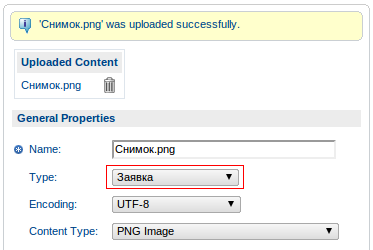
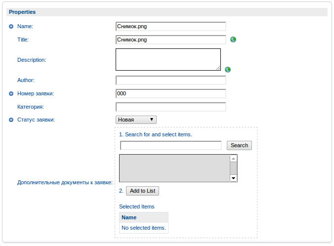
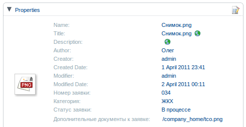
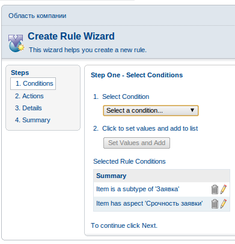

Продолжим начатую тему. Впереди - самое главное. Как же применить этот XML, написанный ранее? Зачем он нам? А вот сейчас посмотрим.
Применение новой модели
Сначала надо уведомить Alfresco о том, что у нас появилась новая модель. Это делается добавлением нового файла в директорию tomcat/shared/classes/alfresco/extension/, название файла должно соответствовать маске *-context.xml. Можно просто добавить код в стандартный custom-model-context.xml.
<?xml version='1.0' encoding='UTF-8'?>
<!DOCTYPE beans PUBLIC '-//SPRING//DTD BEAN//EN' 'http://www.springframework.org/dtd/spring-beans.dtd'>
<beans>
<!-- Registration of new models -->
<bean id="extension.dictionaryBootstrap" parent="dictionaryModelBootstrap" depends-on="dictionaryBootstrap">
<property name="models">
<list>
<value>alfresco/extension/request.xml</value>
</list>
</property>
</bean>
</beans>
Этап 2. Добавление модели в интерфейс /alfresco
В интерфейс alfresco всего 3 места, где нужно что-то изменить:
1. Content Wizard - модуль, отвечающий за загрузку новых документов. Чтобы мы могли выбрать для нового документа принадлежность к нашему типу.
Находим/создаем в той же директории tomcat/shared/classes/alfresco/extension/ файл web-client-config-custom.xml и добавляем туда следующие строки:
<config evaluator="string-compare" condition="Content Wizards" replace="true">
<content-types>
<type name="itd:Request" />
</content-types>
</config>
После этого получаем такой результат:

2. Вторым этапом добавляем свойства файла. Какие и как должны показываться? Самый простой вариант:
<config evaluator="node-type" condition="itd:Request">
<property-sheet>
<show-property name="itd:Number" />
<show-property name="itd:Category" />
<show-property name="itd:Status" />
<show-association name="itd:relatedDocuments" />
</property-sheet>
</config>
Все в соответствии с моделью: свойства, ассоциации. Конечно же эту часть можно делать более сложно и с множеством рюшечек, но сейчас у нас цель - просто понять, как это счастье нам покажется. А вот так:
При редактировании:

Потом просто так:

А где же мы потеряли аспекты?
3. А аспекты мы описываем в разделе Action Wizards - Rule Wizard.
Добавляем в tomcat/shared/classes/alfresco/extension/ файл web-client-config-custom.xml строки
<config evaluator="string-compare" condition="Action Wizards" replace="true">
<aspects>
<!-- добавляем все аспекты, которые успели создать в моделе-->
<aspect name="itd:Severity" />
</aspects>
<subtypes>
<type name="itd:Request" />
</subtypes>
</config>
Далее добавление действий на аспекты выглядит примерно так:

С вашего позволения точнее описывать пока что не буду, спать хочется.. Если есть вопросы по реализации конкретного аспекта - пишите в комменты, а вообще пробуйте..
Этап 3. Добавление модели в интерфейс /share
Во первых, нужно научиться загружать документы нашего типа. Это делается в файле tomcat/webapps/share/WEB-INF/classes/alfresco/site-webscripts/org/alfresco/components/upload/flash-upload.get.js. Требуется добавить наш тип в список, либо изменить существующий на новый. Мы облегчим задачу и просто удалим все типы кроме нашего.
function getContentTypes()
{
var contentTypes = [
{
id: "itd:Request",
value: "itd_Request"
}];
return contentTypes;
}
model.contentTypes = getContentTypes();
После этого все загружаемые документы будут нашего типа.
Следующим этапом отображаем новые свойства в метаданных. Для этого нужно найти (или создать) файл tomcat/shared/classes/alfresco/web-extension/share-config-custom.xml. По аналогии с web-client-config-custom.xml получается такой файл:
<alfresco-config>
<config evaluator="node-type" condition="itd:Request">
<forms>
<form>
<field-visibility>
<show id="itd:Number" />
<show id="itd:Category" />
<show id="itd:Status" />
<show id="itd:relatedDocuments" />
<show id="cm:name" />
</field-visibility>
</form>
</forms>
</config>
</alfresco-config>
Вот и все. Ничего нереального, но это помогает заметно упростить категоризацию и обработку документов, обладающих определенными свойствами.
Олег Китаков
okitakov [AT] itd-systems [DOT] ru
ITD Systems